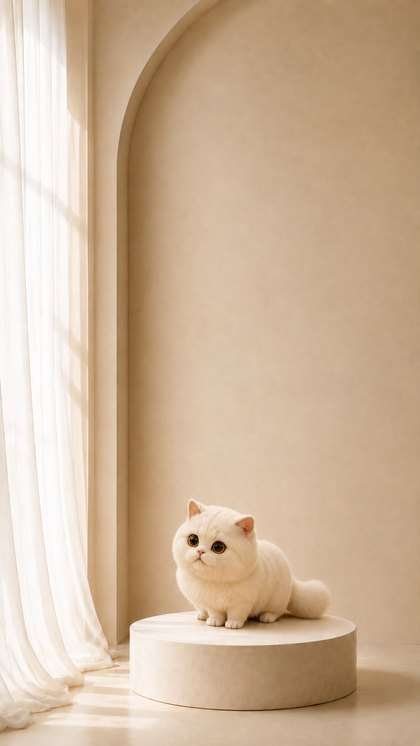
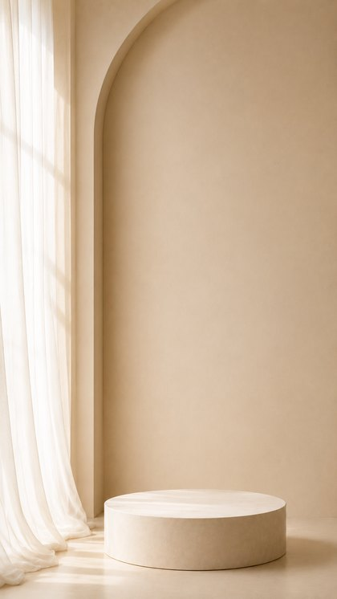
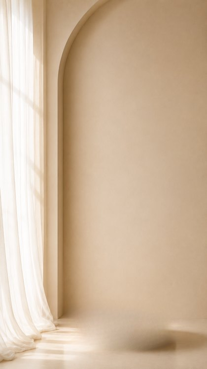
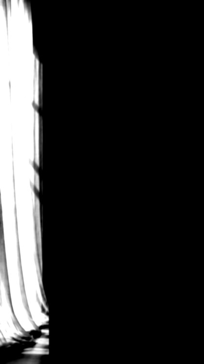
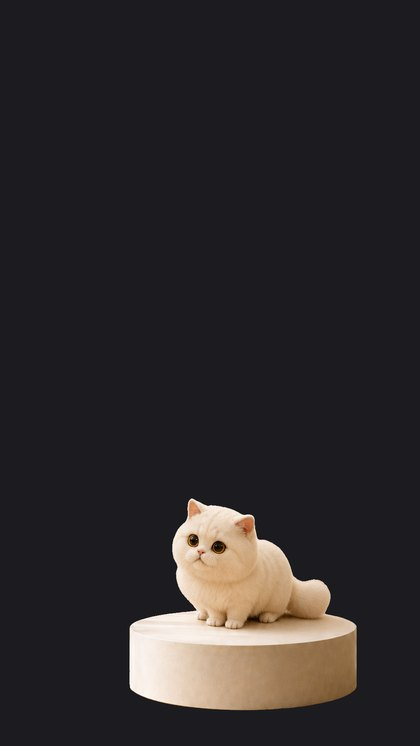
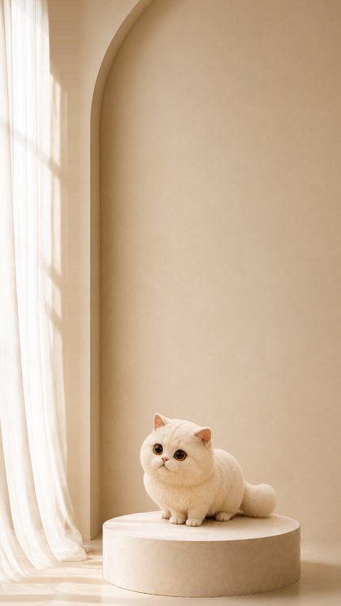
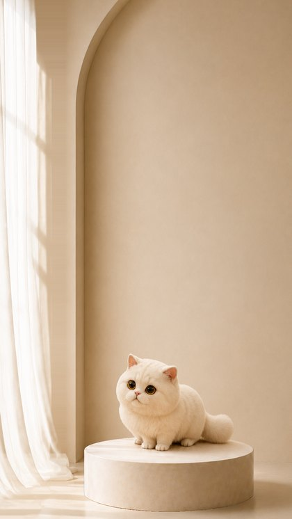
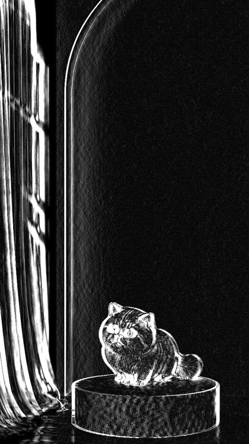

0 원본
AI는 AI만 할 수 있는 일을 하고 거기서 멈춘다.
카메라 이동은 산술이라 고양이 얼굴이 흔들릴 수 없다.
720×1280 · 24fps · 8초 루프. 사양값은 의도적으로 거의 안 보일 만큼 작습니다 — 월페이퍼에서는 그게 고급스럽습니다. 확인용으로 ×6 과장본을 같이 뒀습니다.
| 카메라 | 값 |
|---|---|
| 수평 진폭 | ±1.0% (±10.8px) |
| 수직 진폭 | ±0.18% (±3.5px) |
| 전후 이동 · 회전 | 0 |
| 오버스캔 | 7% |
| 한 사이클 | 8초 · 사인 · 루프 |
여기까지만 AI입니다. 피사체를 떼고, 단상 뒤 벽을 상상하고, 반투명 커튼을 매트로 뽑는 것 — 사람이 손으로 하기 어려운 일들.





깊이맵을 그대로 쓰면 평평한 벽이 고무판처럼 출렁입니다. 벽·바닥·단상은 깊이맵 대신 명시적 평면으로 바꾸고, 순수 수평 이동에서는 그 평면이 이동계수 하나로 줄어듭니다.



픽셀 차이는 변위의 대리 지표가 못 됩니다. 선명한 커튼 엣지는 조금만 움직여도 차이가 크고, 밋밋한 벽은 많이 움직여도 차이가 작습니다. 그래서 서브픽셀 NCC로 실제 변위를 쟀습니다.
| 레이어 | 지정 이동률 | 예상 변위 | 실측 변위 | NCC |
|---|---|---|---|---|
| 커튼 | 0.95 | 13.7 px | −14.73 | 0.991 |
| 그룹 (고양이+단상) | 0.60 | 8.6 px | −9.18 | 0.9999 |
| 벽 | 0.25 | 3.6 px | −3.85 | 0.998 |
카메라 진폭 14.4px 기준 셋 다 7% 이내로 일치합니다.
i/N이면 frame 0에서 수평 오프셋이 정확히 0이 되고, warpAffine이 항등으로 단락되어 그 프레임만 Lanczos 리샘플링을 건너뜁니다. 혼자 더 선명해져서 루프마다 튑니다 — 이음새가 프레임 간 중앙값의 2.88배였습니다. 위상을 반 스텝 밀어 (i+0.5)/N로 하면 어떤 프레임도 항등이 되지 않고, 이음새가 1.77배로 떨어집니다. 남은 1.77배는 결함이 아니라 이음새가 수평 속도 최대 지점에 놓여서입니다.
frames/에 써서 첫 측정이 오염됐습니다. 과장본이 사양본 프레임을 덮어쓴 상태에서 잰 수치였습니다. 출력 디렉터리를 분리하고 전부 재측정했습니다.
| 안 | 상태 | 이유 |
|---|---|---|
| A — 결정론적 2.5D | 완료 | rembg · LaMa · Depth Anything · cv2 전부 로컬에 있음 |
| B — SHARP | 막힘 | 미설치 · HF 캐시 없음. 공식 렌더러가 CUDA 중심이라 Mac에선 .ply를 뽑아도 렌더할 3DGS 렌더러가 없음 |
| C — ViewCrafter / GEN3C | 막힘 | 둘 다 미설치, CUDA급 GPU 필요. 캐시의 zero123plus는 오브젝트 중심(빈 배경 6뷰)이라 방 안 카메라 이동의 대체 불가 |
지금 벽과 바닥이 단일 평면이라 아치 안쪽 리세스가 따로 움직이지 않습니다. 브리프의 레이어 표는 「아치 뒤쪽 10~20%」와 「메인 벽·바닥 20~30%」를 나누라고 되어 있는데, 현재는 둘을 25% 하나로 합쳐 놨습니다. 그 레이어를 쪼개면 깊이감이 눈에 띄게 늘어납니다.